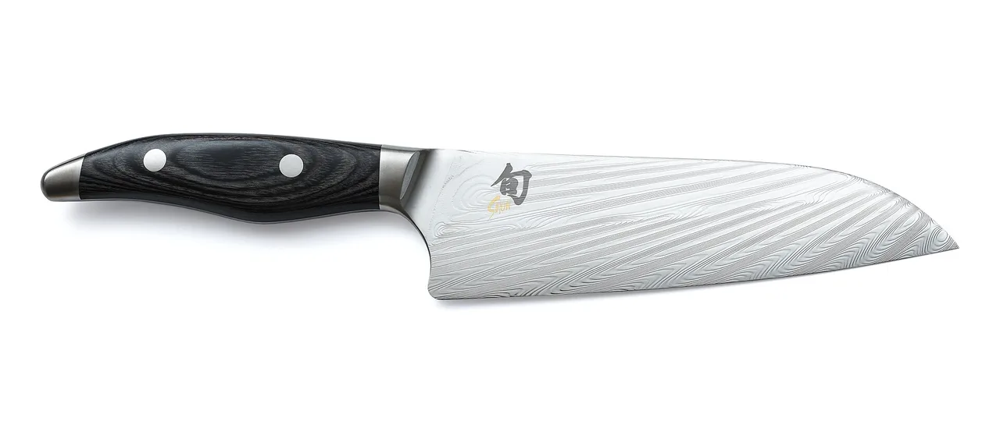
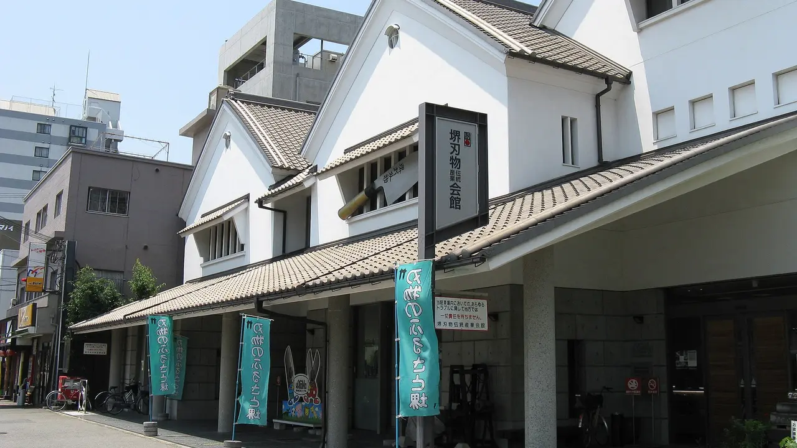
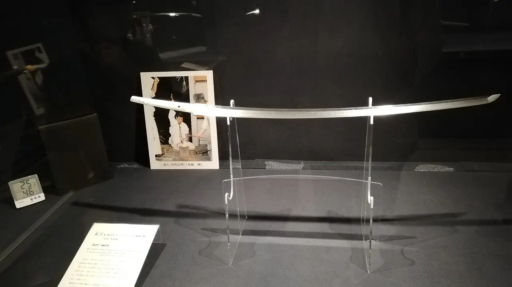
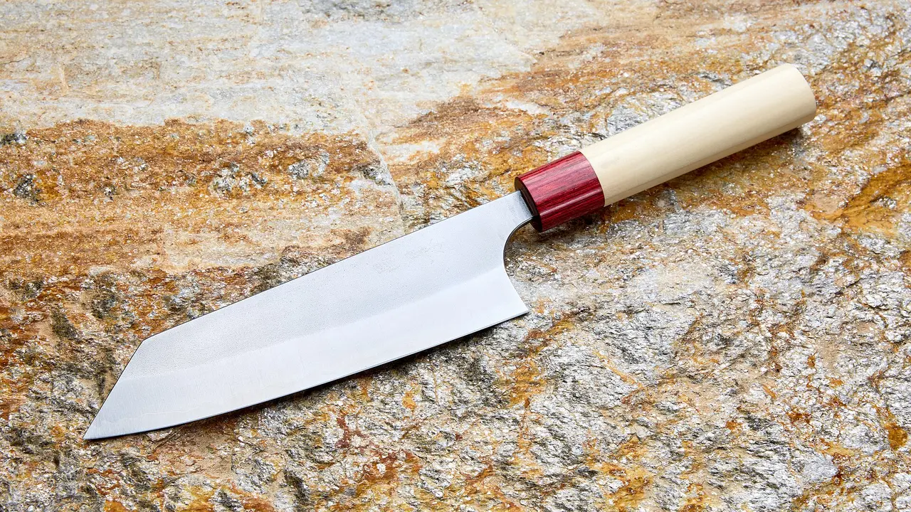
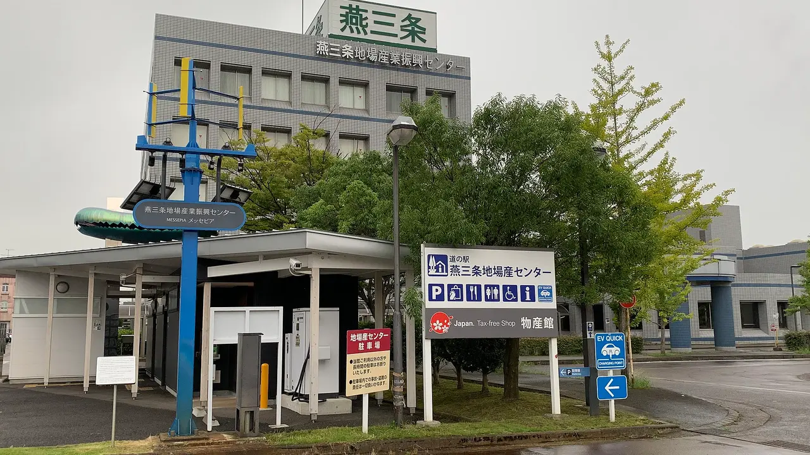
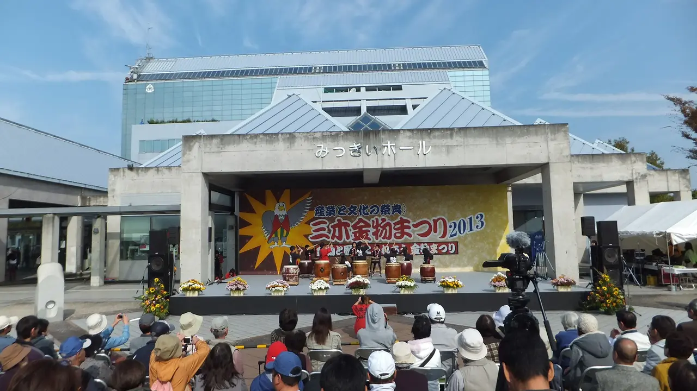

Japan's knife towns, and what to buy in each
"Japanese knife" is not one product. It is at least five industries, in five different towns, that ended up in the same shop window. One of them makes the single-bevel blades restaurant chefs use on raw fish. One makes the mass-produced stainless knives in your kitchen already. One makes carpentry chisels, not cooking knives at all. If you read our whetstone guide or the Feather vs Kai razor guide, you have met two of these towns already — Kyoto's whetstone quarries and Seki in Gifu. This guide covers all five: what each one actually makes, what you can visit, when to go, and what is worth buying there. Every claim below is sourced, including the famous statistic that turns out to have three different versions.

Three questions that decide which town you want
1. Are you cooking Japanese food, or just cooking? Traditional Japanese kitchen knives are single-bevel (片刃 kataba) — sharpened on one side only, which lets a chef take a paper-thin slice off a fish fillet or peel a daikon into a continuous sheet. They are also harder to sharpen and, if you are left-handed, you need a left-handed version. Double-bevel (両刃 ryōba) knives — the santoku and gyuto most people actually want — are made everywhere. Sakai is the single-bevel town. Seki and Tsubame-Sanjo are where the double-bevel volume comes from.
2. Hand-forged, or made well at scale? These are different products at different prices, and neither is a fake. A hand-forged Sakai blade passes through separate specialists — a forger, a sharpener, a handle-maker — and costs accordingly. A Seki factory knife is designed, heat-treated and finished to a tolerance a single smith cannot match by hand, and costs a fifth as much. Deciding which you want before you go saves a lot of confused shop-browsing.
3. Do you want to shop, or to watch? This is the question most guides skip. Buying a knife is easy anywhere. Watching one being made is only possible in specific places, on specific days, and two of the five towns are worth timing a trip around. Those dates are in the table below.
At a glance
| Town | Known for | What you can do there | Best time | Rail from Tokyo |
|---|---|---|---|---|
| Sakai, Osaka堺 | Single-bevel professional kitchen knives | Free museum, paid sharpening & handle-fitting classes | Any time | ~140 min to Shin-Osaka, then local |
| Seki, Gifu関 | Volume production, Kai and Feather blades | Swordsmith museum, monthly forging demo, October festival | Second weekend of October | ~120 min to Gifu, then local |
| Echizen, Fukui越前 | Hand-forged blades, first cutlery named a national craft | Observation deck over a live workshop, bookable knife-making course | Any time, book ahead | ~175 min to Fukui, then local |
| Tsubame-Sanjo, Niigata燕三条 | Stainless, Western cutlery, kitchen tools | 100+ factories open to the public, but only during the festival | 1–4 October 2026 | ~100 min to Niigata, then local |
| Miki, Hyogo三木 | Carpentry tools — saws, chisels, planes | Hardware festival, tool markets, sharpening workshop | Early November | ~160 min to Sannomiya, then local |
Rail times are to each prefecture's main station from NihongoHub's reachability matrix (curated approximations, roughly ±20%, fastest services). All five towns need a further local hop — none of them is the prefecture's main station. The nationwide JR Pass does not cover the fastest Tokaido/Sanyo trains, so add 15–25% on those segments.
The five towns, honestly
Sakai, Osaka — the professional chef's town

Sakai's blade industry runs back more than 600 years, with its beginnings in the 15th century, when tobacco knives made here were good enough that the shogunate gave Sakai an exclusive seal of quality. The older layer is older still: craftspeople making iron tools settled in the area in the 5th century, around the enormous keyhole tomb mounds that are now a UNESCO World Heritage site. That combination — a burial-mound park and a knife industry, in the same city — is the reason Sakai works as a day trip and Seki does not.
The thing that makes Sakai distinctive is not a technique but a division of labour. A Sakai knife is forged by one workshop, sharpened by another, and fitted with a handle by a third. The government-backed "Sakai Hamono" certification tracks that chain, and a blade carrying it has been made, sharpened and handled within Sakai by registered craftsmen. Hand-forged Sakai knives are a Minister of Economy, Trade and Industry designated traditional craft.
The place to start is the Sakai Traditional Crafts Museum (Sakai Denshokan), renewed in 2022, whose second floor is the exhibition space "Sakai Hamono Museum CUT". Admission is free. The ground floor sells hand-forged knives alongside Sakai incense and sweets. Classes run for knife sharpening and, at ¥15,000, a session where you fit a handle to a knife with a craftsman and take it home.
✔ The only town where you can walk in free, see the whole craft explained, and buy from certified makers in one building.
✘ Sakai is a working city, not a scenic one. Most individual workshops are not walk-in — the museum is the access point, and going without it is a wasted trip.
Best for: anyone who wants a yanagiba, deba or usuba, or who wants to understand why Japanese knives are priced the way they are. More on the region in our Osaka guide (profiled 5/5 for culture and 4/5 for access in NihongoHub's 47-prefecture dataset — the easiest of these five to reach).
Seki, Gifu — 700 years, and the volume behind your kitchen drawer

Seki has been a sword-making centre since the Kamakura period (1185–1333) and claims over 700 years of blade making. Its most famous name is the swordsmith Kanemoto — Seki no Magoroku, Magoroku of Seki — whose blades were prized for both beauty and strength, and whose name Kai still uses on a knife line today. If you have already read our razor guide, this is the same town: both Feather and Kai trace back to Seki, and it is where both still concentrate blade production.
The Seki Traditional Swordsmith Museum, open since 1984 and now inside the Sekiterrace complex, is the anchor. It holds swords by Magoroku Kanemoto and others, and has a working smithy with a viewing platform close enough to catch sparks. A Seki swordsmith forges in public once a month on an open day.
The real reason to time a trip is the Seki Cutlery Festival (関の刃物まつり), held on the second weekend of October in recent years — the 58th ran 11–12 October 2025. Around 50 producers sell direct from tents at factory prices: kitchen knives, scissors, pocket knives. There are live forging demonstrations, sword polishing and sheath-making, and free sharpening services. One change worth knowing: the ancient sword-forging demonstration is no longer first-come-first-served but runs on advance reservation with a lottery, capped at 130 people per session.
✔ The best single day in Japan for buying blades at producer prices, and the only place you can watch both swordsmithing and modern cutlery in one town.
✘ Outside the festival and the monthly demo day, Seki is an industrial town with a museum. Gifu also scores only 2/5 for access in our dataset — the local hop from Gifu Station is real.
Best for: buying a lot at once, and for anyone who likes machines as much as hammers. The Gifu guide covers the rest of the prefecture — Shirakawa-go, Takayama, Gero. Check the official Visit Seki site for the 2026 dates; they had not been published when this guide was written.
Echizen, Fukui — the one where you can make your own

The origin story here is unusually specific. In 1337, during the Nanbokuchō period, a Kyoto swordsmith named Chiyozuru Kuniyasu came to Fuchu — now Echizen City — looking for water suitable for forging. While making swords, he began making sickles for the farmers around him, and that is where Echizen Uchihamono begins. Nearly seven centuries later, in 1979, Echizen cutlery became the first cutlery in Japan designated a national Traditional Craft (伝統的工芸品). That "first" is the detail Echizen is proudest of, and it is true.
Takefu Knife Village was founded in 1991 by ten blacksmiths, sharpeners and artisans who pooled their workshops into one site. It is a working factory with a museum, a shop, and — the part that matters — a cylindrical building with an observation platform overlooking the workshop floor, so you can watch craftsmen work without booking anything.
If you do book, the range runs from a factory tour to a six-hour course covering the whole process of making a kitchen knife: fire-forging, hammering, sharpening, fitting the handle. Groups can take shorter classes — paper-knife making, keyholder forging — and everything you make goes home with you the same day. Almost all activities require advance reservation, and the village handles bookings in English by email and fax.
✔ The only one of the five where an ordinary visitor can forge a knife and walk out with it. Fukui also scores 5/5 for food in our dataset, the highest of the five.
✘ Rural and reservation-gated. The nearest Shinkansen stop is Echizen-Takefu, and you will need a taxi from there. Turning up without a booking gets you the shop and the viewing platform, nothing more.
Best for: people who would rather make one knife than buy three. See the Fukui guide for Eiheiji and the rest of the coast.
Tsubame-Sanjo, Niigata — four days a year, a hundred open factories

Tsubame-Sanjo did not start with blades. In the early Edo period the Shinano River flooded the local farmland repeatedly, and a regional official, Ōtani Seibei, brought blacksmiths from Edo to teach farmers to make Japanese nails (和釘 wakugi) as a side income. The side income took over: within about thirty years more than a thousand locals were blacksmithing, and had moved on from nails to saws, hatchets and kitchen knives. A nearby copper mine and incoming craftsmen deepened it, and in the 19th century the region added Western cutlery — which is why Tsubame-Sanjo today is Japan's stainless-steel and kitchen-tool capital rather than a traditional-blade town. Those same Japanese nails are still used at Ise Jingū.
Which brings us to the single best-timed event in this guide. The Tsubame-Sanjo Factory Festival — Kōba no Saiten, "the festival of factories" — runs Thursday 1 October to Sunday 4 October 2026, four days during which over 100 businesses open plants that are normally closed to the public. Many run hands-on workshops. This is not a market with a factory theme; it is the factories themselves, open at once.
✔ Four days of access to working plants you cannot enter in any other week of the year, with hands-on sessions.
✘ Outside those four days there is comparatively little for a visitor — the Jibasan centre and shops, but no open factories. It is also two cities, Tsubame and Sanjo, not one walkable town, so plan local transport.
Best for: anyone who likes process more than product, and for stainless kitchen tools rather than carbon-steel blades. Our Niigata guide covers the rest — and Niigata is the quickest of these five from Tokyo, about 100 minutes.
Miki, Hyogo — the one that is not about kitchen knives

Include Miki in a knife-town list and you have to add a caveat immediately: Miki's craft is carpentry tools. When its blades were designated national traditional crafts in Heisei 8 (1996), the designated items were saws, chisels, planes, trowels and small knives. If you came for a gyuto, this is the wrong town. If you work wood, it is the only right one.
Miki calls itself Japan's oldest blacksmith town, and the claim has two layers. The deep one is that forging here began around 1,500 years ago with blacksmiths from the Korean kingdom of Paekche who settled in the area. The documented one is Hideyoshi's siege of Miki Castle in 1578–80: after taking the castle he granted a tax exemption to help rebuild, which drew in carpenters and blacksmiths who made their own tools to restore the temples and houses — and stayed.
The Miki Hardware Festival (三木金物まつり) is held in early November at Mikiyama Sōgō Kōen, the municipal general park; the 2025 edition ran Saturday 1 and Sunday 2 November, 9:00–16:00. Alongside the tool and produce markets there is a knife-sharpening workshop, stage performances and a chrysanthemum display at local cultural venues.
✔ The best place in Japan to buy Japanese chisels and planes, and to have someone show you how to sharpen them.
✘ Not a kitchen-knife destination, and Hyogo scores 1/5 for nature in our dataset — this is a trip for the tools, with Himeji and Kobe as the scenery around it.
Best for: woodworkers. Overlaps directly with our Japanese hand tools guide, which covers what the saws and chisels actually do. Check the official festival site for 2026 dates.
Getting there: rail times to each prefecture
None of these five towns is its prefecture's main station, so treat the figures below as the long leg and add a local hop — a taxi from Echizen-Takefu, a local line to Seki, the Nankai or JR down to Sakai.
| Town (main station) | From Tokyo | From Kyoto | From Shin-Osaka |
|---|---|---|---|
| Sakai (Shin-Osaka) | ~140 min | ~15 min | — |
| Seki (Gifu Station) | ~120 min | ~60 min | ~70 min |
| Echizen (Fukui Station) | ~175 min | ~85 min | ~80 min |
| Tsubame-Sanjo (Niigata Station) | ~100 min | ~245 min | ~255 min |
| Miki (Sannomiya) | ~160 min | ~30 min | ~15 min |
From NihongoHub's rail reachability matrix (approximate, ±20%, fastest services). The pattern worth noticing: from Tokyo, Niigata is closest and Fukui furthest; from Kansai the order reverses almost exactly. If you are based in Kyoto or Osaka, Sakai and Miki are half-day trips and Tsubame-Sanjo is a different holiday.
About that "98% of Japanese chefs" number
Every English page about Sakai knives repeats a statistic, and it is worth being precise about it because the number changes depending on who is talking. Sakai's own tourism and convention bureau states a domestic share for use by professional chefs of 98%. Other widely-cited English sources give 90%. Others say "over 80 to 90 percent". None of the three cites a primary survey, a year, or a definition of "professional chef".
We are not going to pick one and present it as fact. What is verifiable is narrower and more useful: hand-forged Sakai knives carry a Minister of Economy, Trade and Industry traditional-craft designation, and the "Sakai Hamono" certification system tracks every production stage and only applies to blades forged, sharpened and finished in Sakai by registered craftsmen. Those are checkable facts about the product. The chef percentage is a marketing figure of uncertain origin, and treating it as data is how a shopping decision goes wrong.
What this means when you shop. The certification mark tells you where a blade was made and by whom. The percentage tells you nothing you can act on. If a shop's whole pitch is the statistic, ask about the certification instead.
Buying without going
Only a fraction of what these towns make reaches amazon.com — named workshops, single-bevel professional blades, left-handed versions and most carpentry tools are sold on Japanese marketplaces or direct by the maker. A proxy-buying service ships them worldwide; see how to buy from Japan with Buyee vs ZenMarket → for the mechanics and the fee comparison.
One practical warning that has nothing to do with which service you pick: knives are restricted or prohibited in the mail by several countries, and a few couriers refuse them outright. Check your own country's import rules and your carrier's prohibited-items list before you buy, not after. And never put a knife in hand luggage on the flight home.
If you are buying a hand-forged carbon-steel blade from any of these towns, budget for a stone as well — carbon steel is sharper and rusts, and both facts arrive on the same day. Our whetstone guide covers what grit you actually need.
The Japanese you'll meet on the box
These towns label their products in Japanese even when the packaging is in English, and knowing eight words changes what you can read in a shop.
| Japanese | Reading | What it means |
|---|---|---|
| 打刃物 | uchihamono | Forged blades. The word in "Echizen Uchihamono" and "Banshu Miki Uchihamono" — it means the blade was hammered, not stamped. |
| 片刃 / 両刃 | kataba / ryōba | Single-bevel / double-bevel. The single most important word on the label. |
| 柳刃 | yanagiba | "Willow blade" — the long single-bevel slicer for sashimi. |
| 出刃 | deba | The heavy single-bevel knife for breaking down fish. |
| 三徳 | santoku | "Three virtues" — meat, fish, vegetables. The double-bevel all-rounder. |
| 鍛冶 | kaji | Smithing / the smith. You will see it on workshop signs. |
| 研ぎ | togi | Sharpening. 研ぎ直し togi-naoshi is a re-sharpening service — many shops do it while you wait. |
| 金物 | kanamono | Hardware, in the ironmongery sense. The word in Miki's festival name. |
Common questions
Which town should I visit if I only pick one? Sakai, if you want to understand and buy — free museum, certified makers, easy to reach, and a UNESCO site in the same city. Tsubame-Sanjo if your dates fall on 1–4 October 2026, because open factories beat any museum.
Can I bring a knife home on the plane? In checked baggage, generally yes; in hand luggage, no. Beyond that it depends on your own country's import rules, which vary more than people expect — check before buying.
Is a hand-forged knife better than a factory one? For most home cooks, no. A factory knife from Seki or Tsubame-Sanjo is more consistent, cheaper and easier to maintain. Hand-forged blades reward people who sharpen regularly and want a specific geometry.
Do I need a left-handed knife? Only for single-bevel blades, and then yes, genuinely — a right-handed yanagiba used left-handed will not cut straight. Double-bevel santoku and gyuto are fine either way.
Are the festivals worth planning a trip around? Tsubame-Sanjo, yes — the access is unique to those four days. Seki, yes if you intend to buy several blades. Miki, only if you work wood.
Where to go, what to eat, what to bring home — one Japanese region at a time, with the practical details guides leave out. Free, no spam, unsubscribe anytime.
Sources: Sakai's history, the 5th-century and 15th-century layers, the professional-chef share (98%), the METI traditional-craft designation and the Sakai Hamono certification system from Sakai Tourism & Convention Bureau materials; the 90% and "over 80 to 90 percent" variants from widely-published English retail and travel sources — all three figures are reported without a primary survey, which is why they are presented as competing claims rather than data. Sakai Traditional Crafts Museum (Sakai Denshokan) renewal year, free admission, the "Sakai Hamono Museum CUT" exhibit and the ¥15,000 handle-fitting class from the museum's published visitor information. Seki's Kamakura-period origins, 700-year claim, Kanemoto Magoroku, the Seki Traditional Swordsmith Museum (opened 1984, Sekiterrace) and the monthly forging day from Seki City and Gifu tourism materials; the 58th Seki Cutlery Festival dates (11–12 October 2025), the roughly 50 participating producers and the change of the sword-forging demonstration to advance reservation with a 130-person cap from the Visit Seki official guide — 2026 dates were not published at the time of writing. Echizen's 1337 origin with Chiyozuru Kuniyasu, the 1979 designation as Japan's first Traditional Craft cutlery, and Takefu Knife Village's 1991 founding by ten artisans, observation platform, six-hour course and English reservation contact from Fukui Prefecture and Fukui tourism materials. Tsubame-Sanjo's Edo-period wakugi nail origin, Ōtani Seibei, the growth to over a thousand blacksmiths, the 19th-century move into Western cutlery, and the Kōba no Saiten dates of 1–4 October 2026 with over 100 participating businesses from Niigata tourism and event organiser materials. Miki's Paekche-settler and Miki Castle siege (1578–80) origins, the Heisei 8 (1996) national traditional-craft designation covering saws, chisels, planes, trowels and small knives, and the Miki Hardware Festival's 2025 dates (1–2 November, 9:00–16:00, Mikiyama Sōgō Kōen) from the Miki Hardware Association and the festival's official site. Prefecture profile scores from NihongoHub's 47-prefecture dataset; rail times from NihongoHub's reachability matrix (approximate, ±20%). Festival dates change — confirm with the official organiser before booking travel.